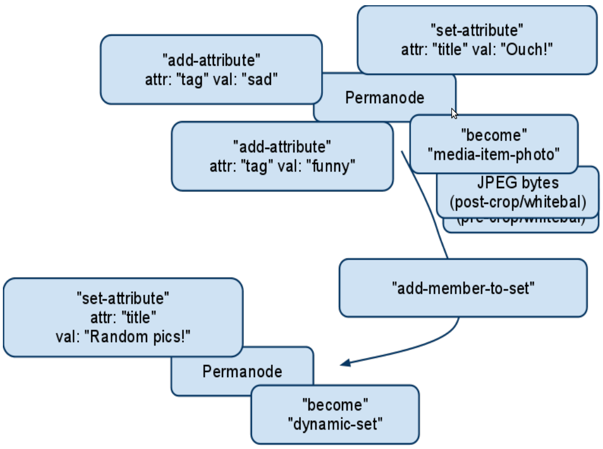
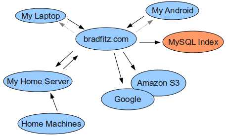

Camlistore
Brad Fitzpatrick
2011-05-07
(use arrow keys or PgUp/PgDown to move slides)
Who am I?
-
Brad Fitzpatrick <brad@danga.com>
- Perl Hacker since 1994
- Projects:
| Danga / 6A (Perl) |
Google |
LiveJournal
memcached
Perlbal
MogileFS
OpenID
|
Social Graph API (XFN / FOAF)
WebFinger
PubSubHubbub
Android
Go
|
* decentralized social
But why am I in Brazil?
-
"Hey, want to come speak at a Perl conference in Brazil?"
- "Yes, totally, but... I don't write much Perl these days. :-("
- "You could speak on memcached."
- "But that's an old topic, no?"
- "You have any new project you're excited about?"
Camlistore!
Camlistore
- New open source project
- Almost a year old
- Still in development
- Starting to be useful :-)
- Hard to easily describe...
Camlistore is a way to store, sync, share, model and back up content
camlistore.org
Motivation
- I've written too many Content Management Systems
- blogs, comments, photos, emails, backups, scanned paperwork, ...
- is a scanned photo a scan, a photo, or a blog post? who cares.
- write one CMS to rule them all
- ... or at least a good framework for higher-level CMSes
Motivation (cont)
- I still want to help solve the Decentralized Social Network Problem
- protocols, not companies
- gmail, hotmail: hosted versions of SMTP, IMAP
- ... but I can run my own SMTP/IMAP server if I want.
- ... or change my SMTP/IMAP provider
Motivation (cont)
- I wanted something conceptually simple.
- HTTP interfaces, not language-specific
- I use lots of machines; don't want to think about sync or conflicts.
- Data archaeology: should be easy and obvious to
reconstruct in 20 or 100 years
The Product
- one private dumping ground to store anything
- backups, filesystems, objects, photos, likes, bookmarks, shares, my website, ...
- live backup my phone
- live replicate / sync my dumping group between my house & laptop & Amazon & Google
- web UI (ala gmail, docs.google.com, etc) or FUSE filesystem
- Easy for end-users; powerful for dorks
Security Model
- your private repo, for life
- everything private by default
- grant access to specific objects/trees with friends or the world
- web UI or CLI tools let you share
So what's with the silly name?
Camlistore
- Content-
- Addressable
- Multi-
- Layer-
- Indexed
- Storage
Content-Addressable
- At the core, everything is stored & addressed by its digest (e.g. SHA1, MD5, etc)
- e.g.
"sha1-0beec7b5ea3f0fdbc95d0dd47f3c5bc275da8a33" for the blob "foo"
- Great properties:
- no versions of content: change it changes the new digest too
- no versions: no sync conflicts
- no versions: perfect caching (have it or don't)
Multi-Layer, Indexed
- Unix philosophy: small pieces with well-defined interfaces that can be chained or composed
- Camlistore pieces include:
- Blob storage: memory, disk, S3, Google, MySQL index, etc
- Schema
- Signing
- Replication
- Indexing: (e.g. replicate from disk to MySQL index)
- Search
- HTML UI
Logically

In reality
- End-users: use a hosted version
- Dorks: single server binary with all the logical pieces
From the bottom up...
Blob Server
Blob Server: how dumb it is
- "Blob" == zero or more bytes. no meta-data
- private operations, to owner of data only:
- get(blobref) → blob
- stat(blobref+) → [(blobref, size), ...]
- put(blobref, blob)
- enumerate(..) → [(blobref, size)...] (sorted by blobref)
- no public (non-owner) access
- HTTP interface:
GET /camli/sha1-xxxxxxx HTTP/1.1
- delete(blobref) is disabled by default, privileged op for GC or replication queues only
Blob Server: seriously, no metadata
- no filenames
- no "mime types"
- no "{create,mod,access} time"
- size is implicit
- blob: just some bytes
- metadata? layers above.
Uh, what can you do with that?
Uh, what can you do with that?
- with just a blob server?
- not much
- but let's start with an easy example...
Filesystem Backups
Filesystem Backups
- previous project: brackup
- good: Perl, slide/dice/encrypt S3 backup, content-addressed, good iterative backups
- bad: large (several MB) "backup manifest" text files
- fossil/venti, git, etc: directories content-addressed by content of their children, hash trees, etc
- git: "tree objects", "commmit objects", etc
- Camlistore: "schema blobs"
Schema: how to model your content
- Camlistore defines one possible schema
- but blobserver doesn't know about it all
- tools generate schema,
- indexer + search understand the schema.
Schema Blobs
- so if all blobs are just dumb blobs of bytes with no metadata,
- how do you store metadata?
- as blobs themselves!
Minimal Schema Blob
{
"camliVersion": 1,
"camliType": "whatever"
}
Whitespace doesn't matter. Just must be valid JSON in its
entirety. Use whatever JSON libraries you've got.
That one is named
sha1-19e851fe3eb3d1f3d9d1cefe9f92c6f3c7d754f6
or perhaps: sha512-2c6746aba012337aaf113fd63c24d994a0703d33eb5d6ed58859e45dc4e02dcf
dae5c4d46c5c757fb85d5aff342245fe4edb780c028a6f3c994c1295236c931e
Schema blob; type "file"
{"camliVersion": 1,
"camliType": "file",
"fileName": "foo.dat",
"unixPermission": "0644",
...,
"size": 6000133,
"contentParts": [
{"blobRef": "sha1-...dead", "size": 111},
{"blobRef": "sha1-...beef", "size": 5000000, "offset": 492 },
{"size": 1000000},
{"blobRef": "digalg-blobref", "size": 22},
]
}
Schema blob; type "directory"
{"camliVersion": 1,
"camliType": "directory",
"fileName": "foodir",
"unixPermission": "0755",
...,
"entries": "sha1-c3764bc2138338d5e2936def18ff8cc9cda38455"
}
Schema blob; type "static-set"
{"camliVersion": 1,
"camliType": "static-set",
"members": [
"sha1-xxxxxxxxxxxx",
"sha1-xxxxxxxxxxxx",
"sha1-xxxxxxxxxxxx",
"sha1-xxxxxxxxxxxx",
"sha1-xxxxxxxxxxxx",
"sha1-xxxxxxxxxxxx",
]
}
Backup a directory...
$ camput --file $HOME
sha1-8659a52f726588dc44d38dfb22d84a4da2902fed
(like git/hg/fossil, that identifier represents everything down.)
Iterative backups are cheap, easy identifier to share, etc
But how will you remember that identifier? (later)
But what about mutable data?
- immutable data is easy to represent & reference
sha1-8659a52f726588dc44d38dfb22d84a4da2902fed is an immutable snapshot
- how to represent mutable data in an immutable, content-addressed world?
- how to share a reference to a mutable object when changing an object mutates its name?
Objects & "Permanodes"
Terminology
- blob: just dumb, immutable series of bytes
- schema blob: a blob that's a valid JSON object w/ camliVersion & camliType
- signed schema blob aka "claim": a schema blob with an embedded OpenPGP signature
- object: something mutable. represented as an anchor "permanode" + a set of mutations (claims)
- permanode: a stable reference. an anchor. just a signed schema blob, but of almost no content...
Permanode
$ camput --permanode
sha1-ea799271abfbf85d8e22e4577f15f704c8349026
$ camget sha1-ea799271abfbf85d8e22e4577f15f704c8349026
{"camliVersion": 1,
"camliSigner": "sha1-c4da9d771661563a27704b91b67989e7ea1e50b8",
"camliType": "permanode",
"random": "oj)r}$Wa/[J|XQThNdhE"
,"camliSig":"iQEcBAABAgAGBQJNRxceAAoJEGjzeDN/6vt8ihIH/Aov7FRIq4dODAPWGDwqL
1X9Ko2ZtSSO1lwHxCQVdCMquDtAdI3387fDlEG/ALoT/LhmtXQgYTt8QqDxVdu
EK1or6/jqo3RMQ8tTgZ+rW2cj9f3Q/dg7el0Ngoq03hyYXdo3whxCH2x0jajSt4RCc
gdXN6XmLlOgD/LVQEJ303Du1OhCvKX1A40BIdwe1zxBc5zkLmoa8rClAlHdqwo
gxYFY4cwFm+jJM5YhSPemNrDe8W7KT6r0oA7SVfOan1NbIQUel65xwIZBD0ah
CXBx6WXvfId6AdiahnbZiBup1fWSzxeeW7Y2/RQwv5IZ8UgfBqRHvnxcbNmScrzl
p3V3ZoY"}
Backup a directory...
$ camput --file $HOME
sha1-8659a52f726588dc44d38dfb22d84a4da2902fed
$ camput --permanode --file $HOME
sha1-ea799271abfbf85d8e22e4577f15f704c8349026
$ camput --permanode --name="Brad's home directory" --file $HOME
sha1-ea799271abfbf85d8e22e4577f15f704c8349026
- all the file data blobs, file/dir schema blobs,
- a new permanode, owned by you
- a mutation: permanode's content attribute == directory root
- a mutation: permanode's name attribute == "Brad's home directory"

Aside: Garbage Collection
- Permanodes are (optionally) GC roots,
- or anything signed by you.
- If not a blob isn't reachable by a signed root, can be deleted.
- If you want to keep a plain "dumb" blob, you should create a "keep" claim for it, or a permanode.
Modeling non-filesystem objects
Example: a photo gallery
- Photos are objects
- Galleries (sets) are objects
- Photos are members of galleries
- Photos & galleries have attributes (single-valued: "title", multi-valued: "tag")
- Photos might be updated over time:
- EXIF GPS updated, cropping, white balance
- don't want to break links!

How to make sense of that?
Indexing & Search
Indexing: summary
For each blob, build an index of:
- directed graph of inter-blob references
- (permanode, time) => resolved attributes
- (permanode, time) => set memberships
- etc...
Indexing & Replication
- indexing is real-time, no polling
- MySQL index speaks the blob server protocol
- just replicate to the index (MySQL, etc) just like other blob servers (Amazon S3, etc)

Replication Implementation
- cold bootstrap:
enumerate() (sorted) all blobs from src and dst, copy all blobs that dst doesn't have.
- more efficient: use multiple machines, starting at
sha1-0*, sha1-1*, sha1-2*, ... etc
- once in-sync, for each
(src, dst) replication pair, keep a src_to_dst_QUEUE namespace on src,
- all new blobs to
src also go into src_to_dst_QUEUE (refcount, hardlink, etc)
- real-time watch
src_to_dst_QUEUE & replicate & delete from the queue. or re-enumerate just the queue.
Search
- Permanodes created by $who, sorted by date desc, type "photo", tagged "funny"
- My recent backups with attribute "hostname" == "camlistore.org",
- All friends' galleries in which this photo appears,
- etc...
...similar to your email, or docs.google.com. "My stuff" or "My bookmarks".
Privacy Model
- all your blobs & objects & searches are private
- nothing is public by default
What if you want to share with friends, or globally publish something?
Sharing & Share Blobs
the act of sharing involves creating a new share claim, just another blob, signed.
here is: sha1-071fda36c1bd9e4595ed16ab5e2a46d44491f708:
{"camliVersion": 1,
"authType": "haveref",
"camliSigner": "sha1-f019d17dd308eebbd49fd94536eb67214c2f0587",
"camliType": "share",
"target": "sha1-0e5e60f367cc8156ae48198c496b2b2ebdf5313d",
"transitive": true
,"camliSig":"iQEcBAABAgAGBQJNQJGuAAoJEIUeCLJL7Fq1EuAIAL/nGoX8caGaANnam0bcIQT7C61wXMRW4qCCaFW+w67ys5z4ztfnTPKwL9ErzMF8Hd32Xe/bVcF6ZL38x/axqI7ehxN8lneKGQNoEdZDA9i752aAr0fkAba6eDehoOj9F4XxOzk3iVrq445jEXtu/+twamHV3UfRozWK1ZQb57dM+cRff47M/Y6VIBRSgW2BrABjuBs8G6PiKxycgh1mb+RL8f9KG+HB/yFuK37YJqZ0zU2OTRp6ELiOgTxbeg99koV9Duy4f4mQgxQgli46077Sv/ujzIeVbmdFL3OenGEzQnyKG0fhf8fa5WkED0XfH7zibAHLiSq3O7x11Q0406U==ANug"}
Target w/ ?via= parameter: sha1-0e5e60f?via=sha1-071fda & next hop
Sharing Details & Implementation
- blobserver is private-only. the frontend mediates access to the world, checks authentication, or lack thereof.
- all non-owner requests must present a share blob's blobref as an access token
- that share blob dictates:
- what sort of authenticatation is required (or "
haveref" for none, like a secret link)
- which blob(s) are granted access (the "
transitive" option)
- requests for a blob must include the path to get there, from the share root
What can be shared
- Share a single blob,
- Share a subtree,
- Share a search query and its results' reachable blobs
- ... give out [world, girlfriend] access to all pictures you take on your phone, in real-time
Project Status
Project Status
- Blobstore, Go (any OS), can store on disk, s3, mysqlindex
- Blobstore, Python (App Engine only) can store on Google
- Perl tests for two blob stores
- Android uploader (Java)
- Bunch of Go libraries / command-line tools: sync, put, get
- FUSE filesystem (read-only, currently)
- Search: basics working. more queries looks easy now.
- Simple, self-contained everything binary (blob storage, sharing, search, index, frontend) for early adopters: ~95%
- Web UI / JavaScript APIs: in progress
In Review
- You own all your blobs; everything is private by default.
- Mutable objects are made of mutation claim blobs.
- Sync is trivial: either you have it or you don't
- Some blobs are signed
- Indexing & search to find your blobs / roots
- To share you must create a declaration of sharing ...
- ... and the system will only allow access if such claims exist.
- Decentralized, but hostable. You can run your own server (with no central
company or point of control), but you can also let somebody else do it for
you, like email.
Thank you!
Brad Fitzpatrick, brad@danga.com; Want to help? More info: camlistore.org